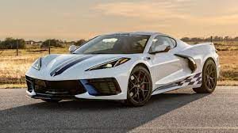

Lo primero que llama la atención del nuevo C8 Corvette es lo diferente que es con respecto a sus predecesores. Atrás quedaron esos capós alargados y zagas recortadas para dar paso a un estilo más afilado y refinado. El frontal está protagonizado por un grupo óptico delgado y un parachoques con grandes entradas de aire, una central y dos a cada lado. La vista lateral, por otro lado, nos permite visualizar líneas marcadas y deportivas, con dos grandes entradas de aire y una sección posterior más alargada de lo normal. Los marcados pasos de rueda dan cobijo a unas llantas de aleación de 19 pulgadas delante y 20 pulgadas atrás, mientras que la zaga está representada por un alerón fijo, un grupo óptico de LED y un difusor con salidas de escape integradas.Un detalle interesante es su configuración de techo, de tipo targa, que se puede remover para dejar al aire su cabina, además de ofrecerse también con opción de carrocería convertible. Esta configuración se une a un maletero delantero lo suficientemente grande como para albergar “equipaje de mano y una bolsa para un ordenador portátil”, según Chevrolet. Por último, las dimensiones del Corvette C8 son de 4.630 mm de largo, 1.934 mm de ancho y 1.234 mm de alto, así como una distancia entre ejes de 2.722 mm.Corvette desde el interior
Un interior tecnológico
El interior del Chevrolet Corvette también es completamente nuevo. Se caracteriza por un volante de dos radios totalmente nuevo que otorga una visión sin obstáculos al cuadro de instrumentos completamente digital de 12 pulgadas. A la derecha del volante se integra una pantalla táctil para el sistema de información y entretenimiento de estilo flotante de mayor tamaño y resolución. Destaca el uso de fibra de carbono y aluminio, los asientos de cuero de aspecto y forma muy deportiva, la consola central descendente con mandos integrados, el uso de cuero con costuras visibles, la disposición de los controles en la consola, las guanteras y la atmósfera premium de diseño avanzado que atrás deja a los hasta ahora clásicos Corvette. El sistema de sonido Bose de 10 altavoces se puede mejorar a uno con 14 altavoces, mientras que el volante calefactado y los asientos con función memoria son parte también de su equipamiento. El comprador puede elegir entre tres opciones de asiento diferentes -GT1, GT2 y Competition Sport-, así como seis colores diferentes. Las tapicerías disponibles incluyen cuero Milan, Napa o un material inspirado en los chalecos de Kevlar.
De un deportivo con motor delantero a un superdeportivo con motor central
La principal novedad en el C8 Corvette es la disposición de su motor, que pasa de estar ubicado en el eje delantero a situarse en el centro del chasis monocasco de fibra de carbono. Se trata de una unidad LT2 V8 de 6.2 litros y aspiración natural que entrega 497 CV de potencia y un par motor máximo de 630 Nm. Este bloque se asocia a un cambio automático de doble embrague y ocho velocidades como única opción que envía la potencia en exclusiva al tren posterior. Aunque las cifras no han sido publicadas aún, el Corvette Stingray es capaz de pasar de cero a 100 km/h en menos de tres segundos. De manera opcional, los compradores pueden optar por el paquete Z51 Performance, el cual le permite aumentar la potencia hasta los 502 CV y 637 Nm de par.